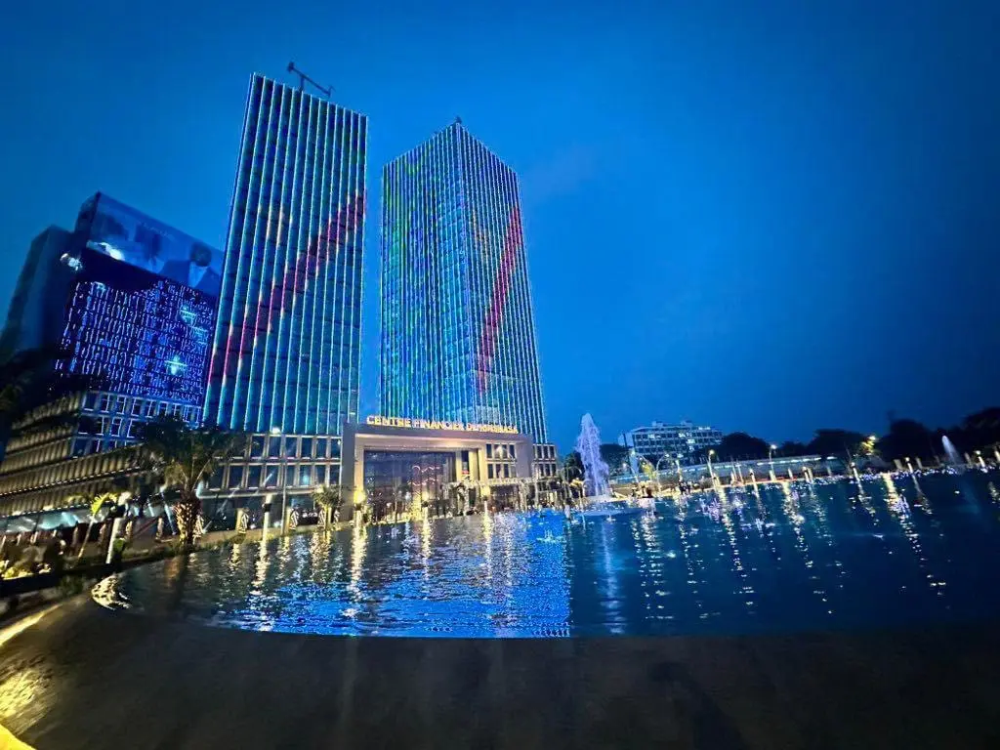

About the DRC
Official name: Democratic Republic of the Congo
Capital: Kinshasa
Official language: French
Currency: Congolese franc (CDF)
Independence: June 30, 1960
Major rivers: Congo River
Weather ⛅
Location: Kinshasa
Temperature: 29 °C
Conditions: Partly cloudy
Wind: 12 km/h
Wind Chill: N/A
Discover the Heart of Africa
The Democratic Republic of the Congo is a large country in Central Africa, known for its rich natural resources, cultural diversity, and remarkable biodiversity. The Congo River flows through the country, while the Congo Basin contains one of the world's largest tropical rainforests. From the busy streets of Kinshasa to the mountains and national parks in the east, the DRC has extraordinary places to discover.